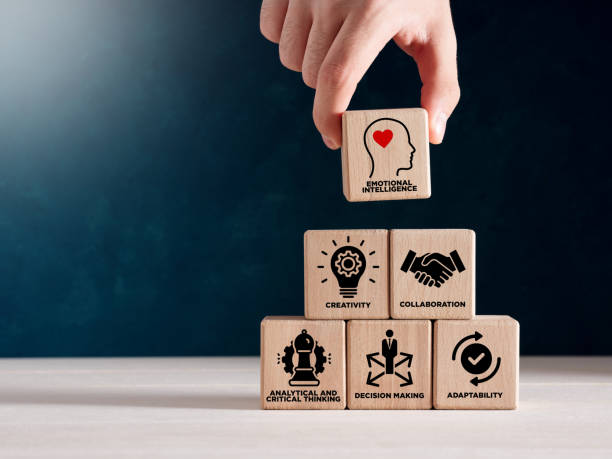

Hard Skills
- Software migration & testing
- Process documentation
- Troubleshooting & analysis
- Legal contract management
- Tax preparation & compliance
- Customer service & support
- Version control basics (Git/GitHub)
- Microsoft Office Suite (Word, Excel, PowerPoint)
- Basic HTML & CSS
- Basic scripting understanding (PowerShell, Bash)
- Virtual machines & hypervisors (VirtualBox, Hyper‑V)
Soft Skills
- Fast learner
- Passionate about continuous learning
- Strong communication skills
- Problem-solving abilities
- Strong teamwork & collaboration
- Fluent Spanish communication
- Adaptability
- Customer-focused approach
- Time management & organization
- Attention to detail
- Empathy & interpersonal skills
